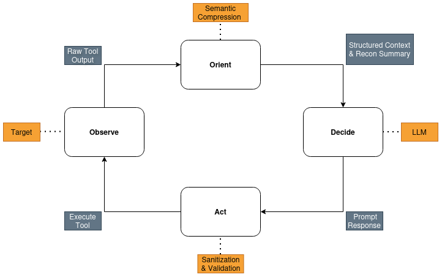
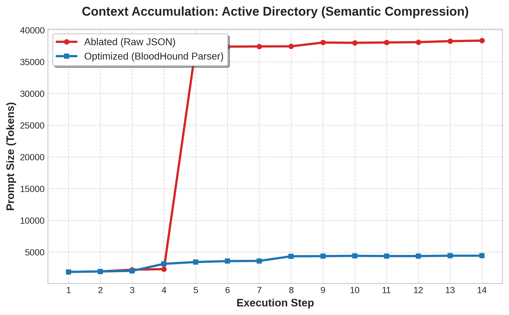
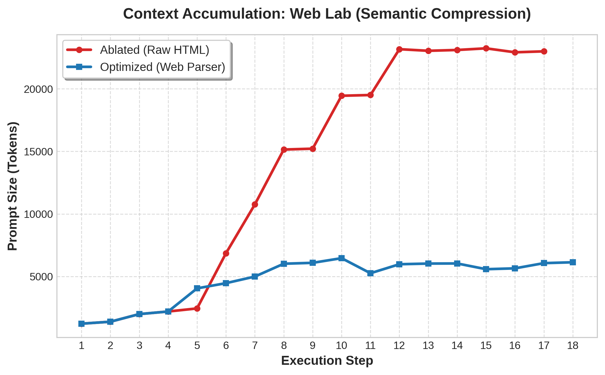
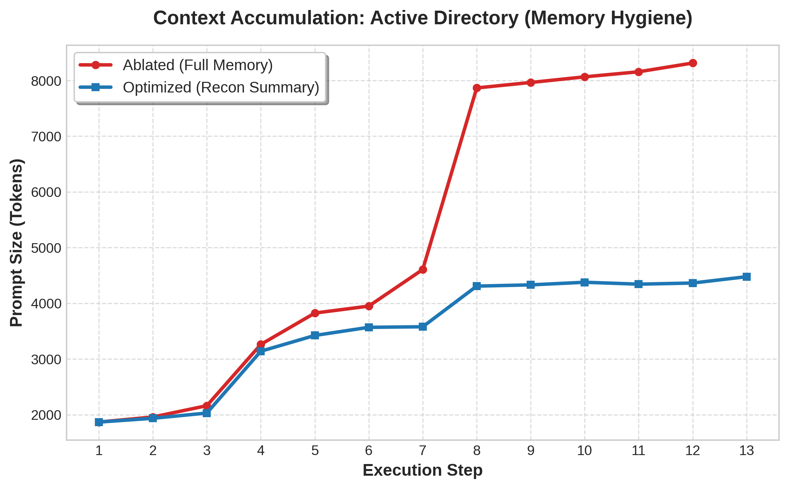
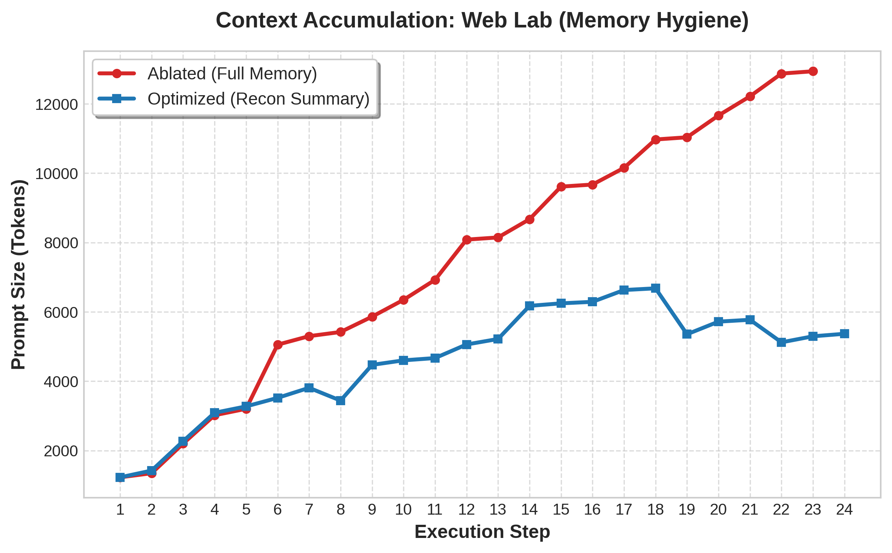

Autonomous LLM-based Penetration Testing Orchestrator
The Core Concept
The proposed framework acts as an intelligent middleware designed to emulate the cognitive and operational workflow of a human penetration tester. Instead of following traditional automated scanners that rely on a static execution tree, the system operates on a dynamic closed-loop architecture inspired by the "Observe, Orient, Decide, Act" (OODA) loop. At its center is an autonomous orchestrator that bridges the high-level strategic reasoning of Large Language Models (LLMs) with the low-level execution of standard offensive security tools. By continuously interpreting tool outputs, updating its internal state, and adapting its strategy based on the target environment's evolving security posture, the agent interacts intelligently with the network. Furthermore, to ensure safe operation and command chain integrity, all LLM-generated decisions are routed through a rigorous validation layer that checks against a whitelist of supported tools and prevents infinite execution loops
To overcome the severe context saturation issues that typically plague LLM-based agents, the system relies on two primary innovation layers: Semantic Compression and Strategic Memory Management. The Semantic Compression layer specifically targets "Vertical Bloat" by acting as a domain-specific dispatcher; it distills massive raw datasets, such as verbose BloodHound JSON graphs or noisy HTML DOMs, into highly optimized, token-efficient textual representations. Simultaneously, the framework mitigates "Horizontal Bloat"—the linear accumulation of command history—by implementing a dynamic Recon Summary. This continuous application of Memory Hygiene ensures that the Context Management Layer only feeds high-signal, deduplicated information to the model. Consequently, the system drastically reduces the LLM's cognitive drag, allowing the underlying model to focus exclusively on deep, forward-looking strategic pivoting rather than wasting compute on parsing historical noise
Video Demonstration on Active Directory (x2 speedup)
The following demo showcases the orchestrator's ability to autonomously identify and exploit multiple vulnerabilities, including Kerberoasting, ACL misconfigurations, and perform Privilege Escalation in a simulated Active Directory domain reaching Domain Admin privileges. The system parses environment data, reasons about the attack surface, and selects the optimal toolset for exploitation.
Video Demonstration on Web Application (x2 speedup)
The following demo showcases the orchestrator's ability to autonomously identify multiple Web vulnerabilities, including SQL Injection, LFI, RCE and XSS on a simulated web application target. The agent performs reconnaissance, identifies vulnerable endpoints, and executes exploitation PoC without human intervention.
Agentic Architecture
The system utilizes a Observe-Orient-Decide-Act Loop to manage the offensive lifecycle:
Execution of a security tool and collection of raw results directly from the target network or application.
Pre-processing and parsing of the raw data via the Semantic Compression Layer, followed by an update of the Recon Summary to maintain the current state of the assessment
Presenting the summarized, noise-free context to the LLM so it can determine the next tactical objective or pivot point
Translating the LLM’s high-level decision into a correctly formatted and validated command-line execution for the next tool in the chain

Key Results
The experimental evaluation of the framework demonstrated significant improvements in operational scalability, efficiency, and security. By implementing the Semantic Compression layer, the system successfully mitigated "Vertical Bloat," reducing the token footprint of raw tool outputs—such as complex BloodHound Active Directory graphs—by over 85%. This distillation prevented context saturation and preserved the model's ability to execute deep, graph-based strategic reasoning. Furthermore, the introduction of Memory Hygiene via a dynamic Recon Summary effectively eliminated "Horizontal Bloat".



